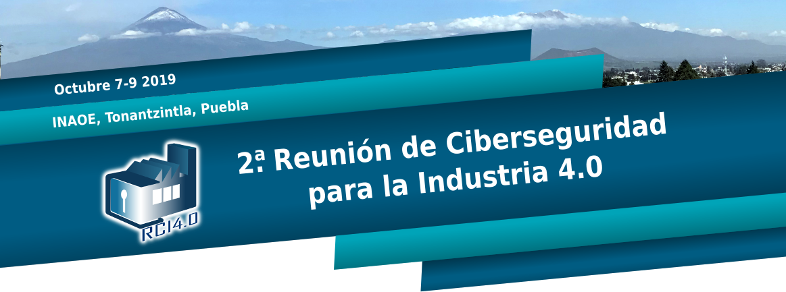
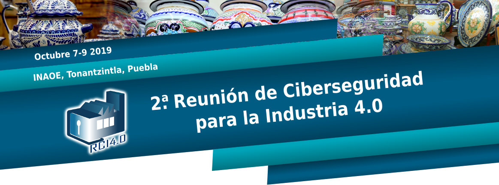

- 
- 

Miércoles 16 de octubre
| 9:00 - 9:30 | |
| 9:30 - 9:45 | Inauguración |
| 9:45 - 10:45 | "IA y Ciberseguridad"M. en C. Carlos Doce Director General, MCSec. y Colaborador en MaTTica |
| 10:45 - 11:45 | "Protección de datos personales"Ivonne Moñoz En línea |
| 11:45 - 12:00 | Coffe break |
| 12:00 - 13:00 | “Perfiles RRHH en Ciberseguridad”M. En C. Gabriel Labrada Oracle |
| 13:15 - 15:15 | Foto y Comida |
| 15:30 - 17:00 | Panel de discusión: "Titulo por confirmar" |
| 17:00 - 19:00 | Charla: "Computación cuántica y consideraciones de SeguridadM. en C. Freddy Chaurra Estudiante docotral de ciencias computacionales |
| 19:00 - En adelante | Visita: Observación |
Jueves 17 de octubre
| 9:00 - 9:30 | Atención a grupos invitados |
| 9:30 - 10:30 | Conferencia Magistral (2): "Titulo por confirmar"Por confirmar Por confirmar |
| 10:30 - 11:30 | "IA y Ciberseguridad"Raúl Monroy Tecnológico de Moterrey En línea |
| 11:30 - 12:00 | Posters/Coffee Break |
| 12:00 - 13:00 | "Seguridad en cómputo en la nube"Armando Faz En línea |
| 13:15 - 15:15 | Visita: Telescopio solar/Comida |
| 15:30 - 17:00 | Posters, Networking, Reclutamiento |
| 17:00 - 19:00 | Taller 1: Ténicas de autoprotección (en linux)Requisito: Llevar una USB y tener una cuenta de google |
| 17:00 - 19:00 | Taller 2: Forencia básica en LinuxIng. Diego Cruz Estudiante de maestría en ciencias computacionales |
Viernes 18 de octubre
| 9:00 - 9:30 | Atención a grupos de invitados |
| 9:30 - 10:30 | "Blockchain"Rocio Aldeco |
| 10:30 - 11:30 | "PQC"Francisco Rodríguez En línea |
| 11:30 - 12:00 | Demos/Coffee Break |
| 12:00 - 13:00 | “Por confirmar”Audi |
| 13:15 - 15:15 | Clausura/Comida |